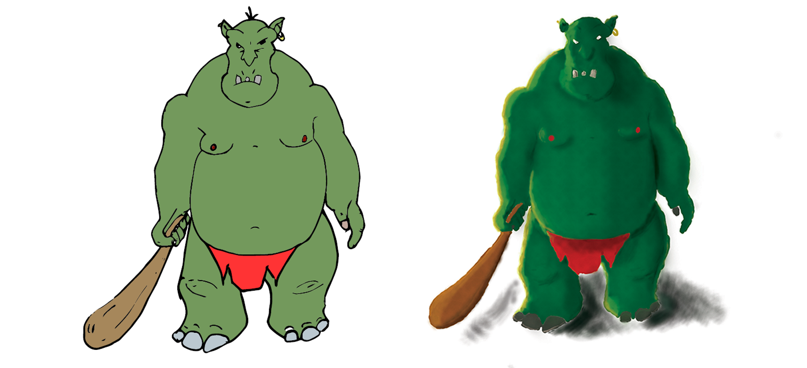
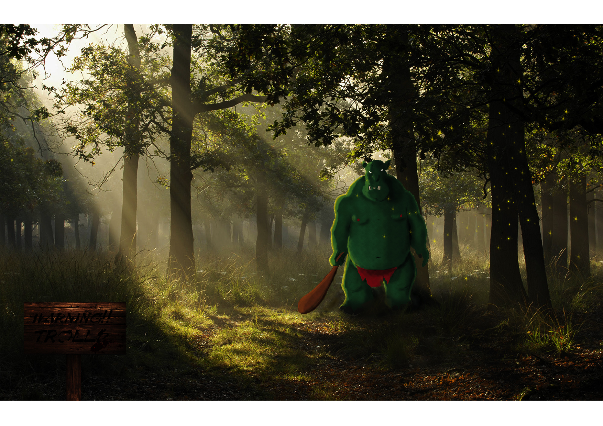
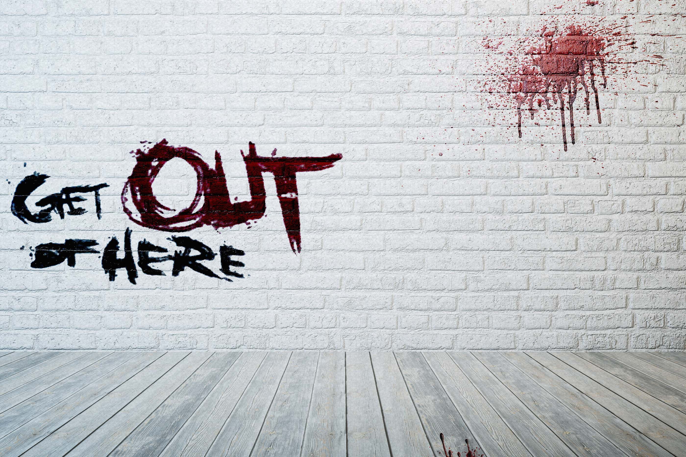
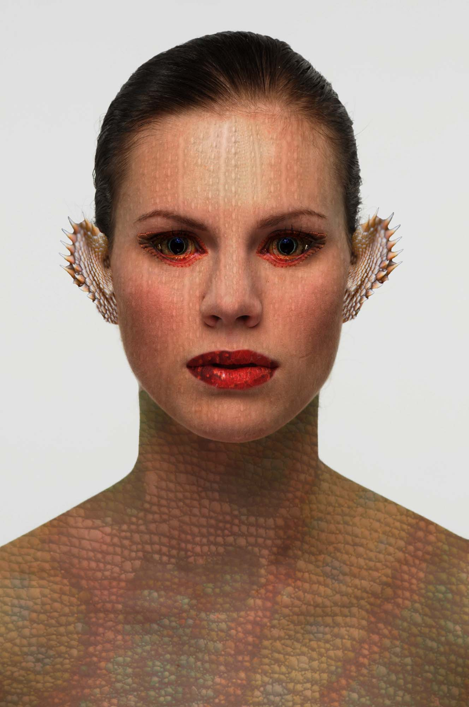

Color i tezturitzacio utilitzant pinzells
Matte painting amb fotomuntatge
Imatge de graffiti sobre un fons de paret amb textura.
Creacio de un personatge de fantasia A partir de 4 o més imatges fotogràfiques amb temes de textures diferents